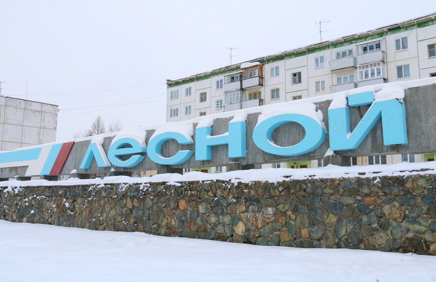

История города Лесного
6 июня 1947 года было принято решение Совета Министров СССР о создании завода № 814 по электромагнитному разделению изотопов (директор завода Д. Е. Васильев, научный руководитель Л. А. Арцимович). Завод также назывался Базой № 9.
В июле 1947 года специальная правительственная комиссия одобрила предложение о строительстве этого завода северо-западнее посёлка Нижняя Тура. 7 августа 1947 года приказом министра внутренних дел СССР было создано управление исправительно-трудового лагеря и строительства № 1418 МВД СССР для возведения завода № 814 и жилого посёлка при нём. Посёлок получил название Горный. К началу 1950 года был смонтирован магнит высотой около 21 метра и весом около 3 тысяч тонн с разделительными камерами, расположенными в зазорах сердечника электромагнита на пяти этажах. Осенью 1950 г. на заводе начался выпуск изотопов.
Постановлением Совета Министров СССР от 15 сентября 1951 г. № 3506-1628сс/оп было намечено строительство в 1951—1952 годах второго в СССР завода для серийного изготовления атомных бомб мощностью 60 единиц в год. Предприятие получило наименование Государственный союзный завод № 418. Директором был назначен А. Я. Мальский, ранее возглавлявший опытный завод № 2 КБ-11.
В 1954 году посёлок получил статус города и стал именоваться Свердловском-45. В 1994 году распоряжением Правительства РФ № 3-р город получил название Лесной. В 1996 году после присоединения нескольких территорий стал центром муниципального образования «Город Лесной». С 2006 г. переименован в городской округ «Город Лесной».
Строительство города велось силами заключённых ГУЛАГ. Их численность в 1950-е годы достигала 20-30 тыс.чел. Практически вся старая часть города и его дорожная сеть построена силами заключенных.
3 июля 2006 года на комбинате «Электрохимприбор» произошло возгорание 13 брикетов стружки урана-238 (т. н. обеднённого урана). Экологи, которых и не допустили к месту аварии и не разрешили взять пробы грунта, полагают, что сгорело от 200 до 400 килограммов урана. Альтернативные данные были засекречены, а работа негосударственных некоммерческих экологических организаций запрещена.
Утверждён 21 января 2009
«В зелёном поле два золотых скрещенных меча в серебряных с отделкой первого металла ножнах. Окруженные тонкой серебряной внутренней каймой, украшенной снаружи таковыми же сосновыми шишками; поверх всего положен золотой знак атома: византин, окруженный тремя цикламорами и сопровождаемый тремя малыми византинами (2 и 1), лежащими на крайних точках цикламоров. Щит увенчан золотой муниципальной короной установленного образца».
Цвет поля и сосновые шишки служат гласными символами к названию городского округа. Скрещенные мечи, и знак атома показывают роль размещенных в городе производств в поддержании мирового военного паритета. Наличие внутренней каймы — символ закрытости городской территории.
На эмблеме города Лесной изображены три зелёные горы, белое стропило, на синем фоне эмблема, состоящая из реторты, шестерни и атома с орбитами электронов.